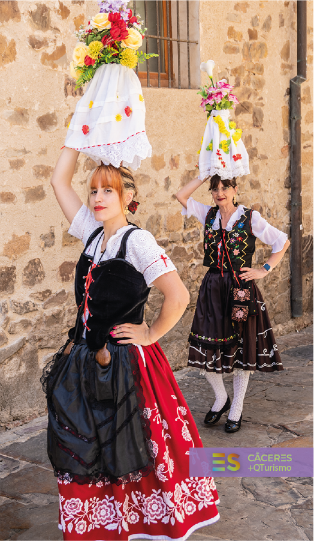
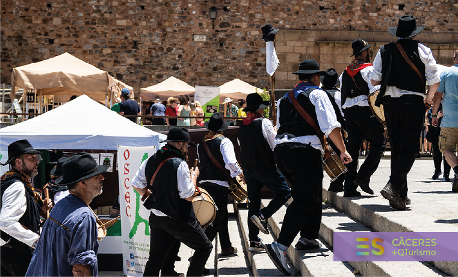
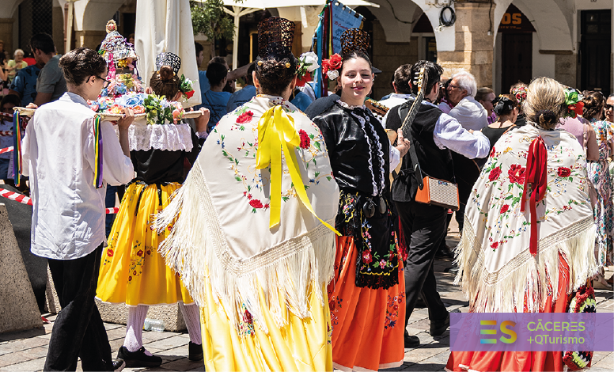
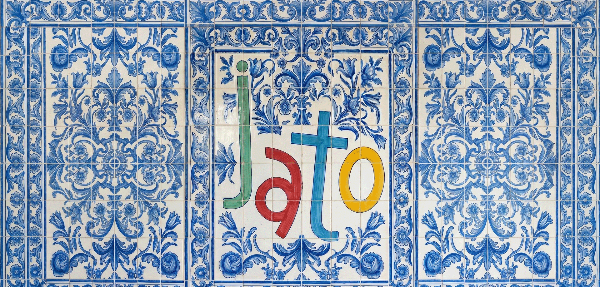
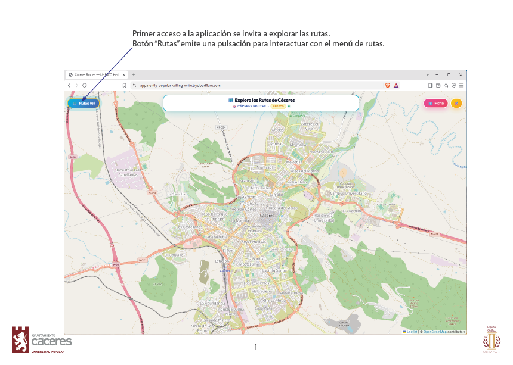
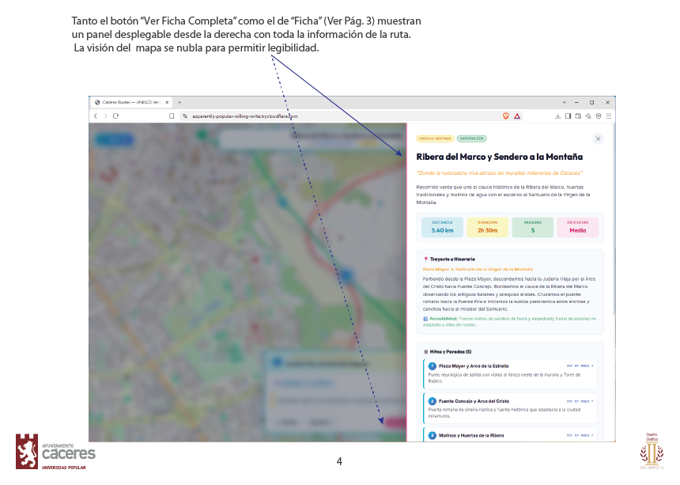

Campaña Turismo Cáceres ES+QTurismo
Cuatro piezas de la campaña: muñecas, escaleras, pasacalles y Jarramplas.



Cuatro piezas de la campaña: muñecas, escaleras, pasacalles y Jarramplas.

Presentación institucional interactiva y análisis de identidad visual, stands temáticos y propuesta gráfica para la I Feria Nacional del Folklore (#es+QTurismo).

Modelo tridimensional interactivo GLTF de Cáceres con navegación orbital, hitos patrimoniales georreferenciados y visor documental.

Aplicación web responsiva con simulador de dispositivos (PC/Tablet/Móvil), modo oscuro OLED, cartografía y fichas técnicas oficiales.







Ocho láminas del recorrido: mapa, selección de ruta, ficha, puntos de interés y adaptación a móvil.
Prueba de concepto en vídeo de la aplicación educativa del aula de naturaleza.